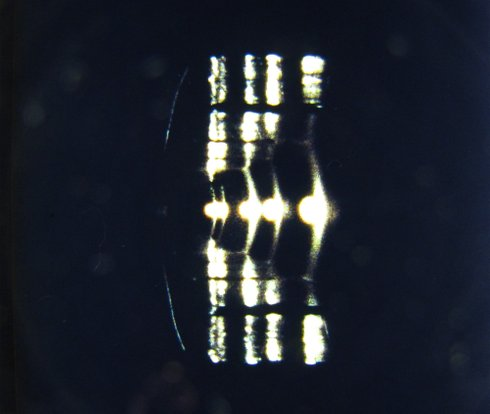
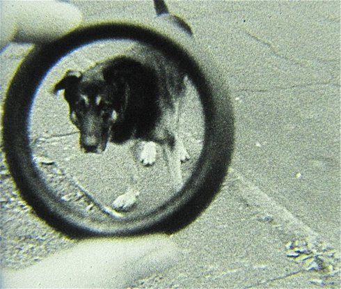
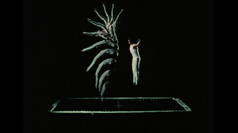

Artist in Focus: EVE HELLER
Freitag 9 okt | 20.00 | filmmuseum münchen
 OneUSA, AT 1978 - 2010 2 min | ohne Dialog | 35mm In der ersten Filmklasse von Keith Sanborn, damals Graduate Student von Hollis Frampton, entstand dieser Film mit einer einzigen Rolle Super-8, ohne Kamerabewegung. Eine Art poetisch-kinematografischer Einzeiler, der den strukturalistischen Geist seiner Zeit atmet. (Eve Heller) |

Self-Examination Remote ControlUSA, AT 1981 - 2010 5 min | Englisch | 35mm Der Film entstand während meines Studienjahres bei Tony Conrad, und seit seiner Premiere am Ende des Semesters war es mir einfach zu peinlich, den Film nochmals öffentlich vorzuführen. (Eve Heller) |
 JuiceAT, USA 1982 - 2010 4 min | ohne Dialog | 35mm Das kinetische Schwarzweiß-Porträt meines geliebten Hundes Juice; ein ekstatisches Herumtollen in einer ansonsten etwas bedrückenden Nachbarschaft in Buffalo, New York. (Eve Heller) |

Last LostUSA 1996 14 min | ohne Dialog Ein Schimpanse als Beobachter einer verwirrenden Menschenwelt – entsprungen aus einem harmlosen Unterhaltungsfilm der 1940er Jahre, angesiedelt in Coney Island. |

Astor PlaceUSA 1997 10 min | ohne Dialog Ein verspiegeltes Schaufenster in New York, durch das die Kamera in Zeitlupe die improvisierte Choreographie der Bewegungen der Passanten aufzeichnet. |

Her Glacial SpeedUSA 2001 4 min | ohne Dialog | 16mm Bilder aus unterschiedlichen Lehrfilmen der 1970er Jahre, beraubt ihrer Farben, Töne und ursprünglichen Bedeutungen, neu komponiert zu einem wortlosen Gedicht, sanft pendelnd zwischen Gefühlen der Erregung und Trauer. |

Behind This Soft EclipseUSA 2004 10 min | ohne Dialog | 16mm Eine Landschaft in Mount Forest, Ontario, auf selbstentwickeltem High-Contrast Film, in Szene gesetzt als elegischer Ort. Gewidmet der kanadischen Filmemacherin und Schriftstellerin Marion McMahon, die mit ihrem Mann Philip Hoffman in Mount Forest eine Werkstatt für unabhängiges Filmschaffen gegründet hat: das "Independent Imaging Retreat". |

Ruby SkinUSA 2005 4 min 30 sek | Englisch | 16mm Filmische Rache für zahllose Schulstunden in den USA, in denen man hölzernen Lehrfilmen ausgeliefert war: ein anarchistischer Impuls, Unsinn auf 16mm zu stiften. Als Basis diente ein über die Jahre stark geröteter Lehrfilm über "kreatives Schreiben", der in kleinste Fragmente zerlegt wurde. |
 Creme 21AT, USA 2013 10 min | Englisch | 16mm auf HDAusgehend von einem aus Lehrfilmen bestehenden, umfangreichen Found-Footage-Material taucht Eve Heller ein in die unergründlichen Weiten und Tiefen der Zeit. |